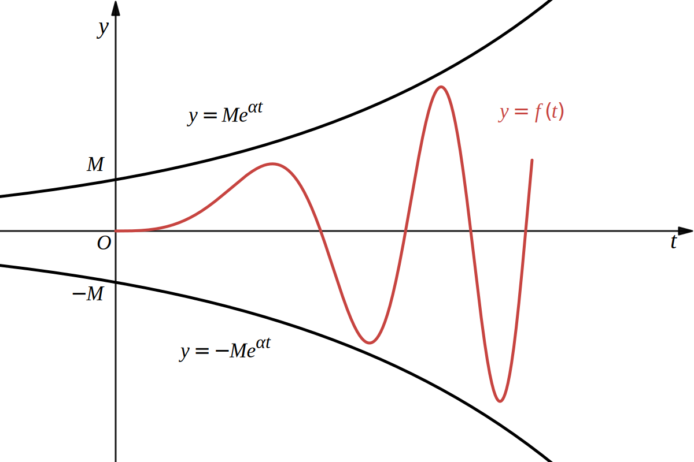

ラプラス変換の存在条件
指数 \(\alpha\) 位の関数
区間 \([0,\infty)\) で定義された関数 \(f(t)\) に対して、ある定数 \(M\gt0,\alpha\) が存在して
\[
\forall t\in[0,\infty),\quad|f(t)|\le Me^{\alpha t}
\]
を満たすとき、\(f(t)\) を指数 \(\alpha\) 位の関数という。
これはグラフを描くとイメージがしやすいと思います。
\[
|f(t)|\le Me^{\alpha t}
\]
の絶対値を外すと次のように書けます。
\[
-Me^{\alpha t}\le f(t)\le Me^{\alpha t}
\]
グラフを描くと
関数 \(y=f(t)\) が２つの曲線 \(y=Me^{\alpha t}\) と \(y=-Me^{\alpha t}\) に挟まれる領域に存在するとき、\(f(t)\) を指数 \(\alpha\) 位の関数と呼ぶということです。